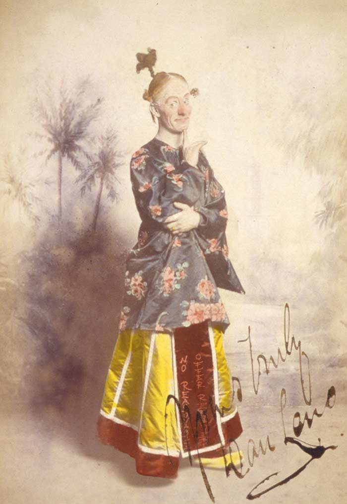

In the late 1800s to the mid-1900s, pantomime dames became a popular form of female impersonation in Europe.
This was the first era of female impersonation in Europe to use comedy as part of the performance, contrasting with the serious Shakespearean tragedies and Italian operas.
The dame became a stock character with a range of attitudes from "charwoman" to "grande dame" that mainly was used for improvisation. The most famous and successful pantomime dame was Dan Leno.
After World War I and World War II, the theatre and movie scenes were changing, and the use of pantomime dames declined

Fig 1:Dan Leno
America
The first person to describe himself "the queen of drag" was William Dorsey Swann,
who in the 1880s started also hosting drag balls attended by other men who were former slaves,
and often raided by the police, as documented in the newspapers. In 1896, Swann was convicted and sentenced to 10 months in jail on the false charge of
"keeping a disorderly house" (euphemism for running a brothel) and demanded a pardon from the president for holding a drag ball (the demand was denied).